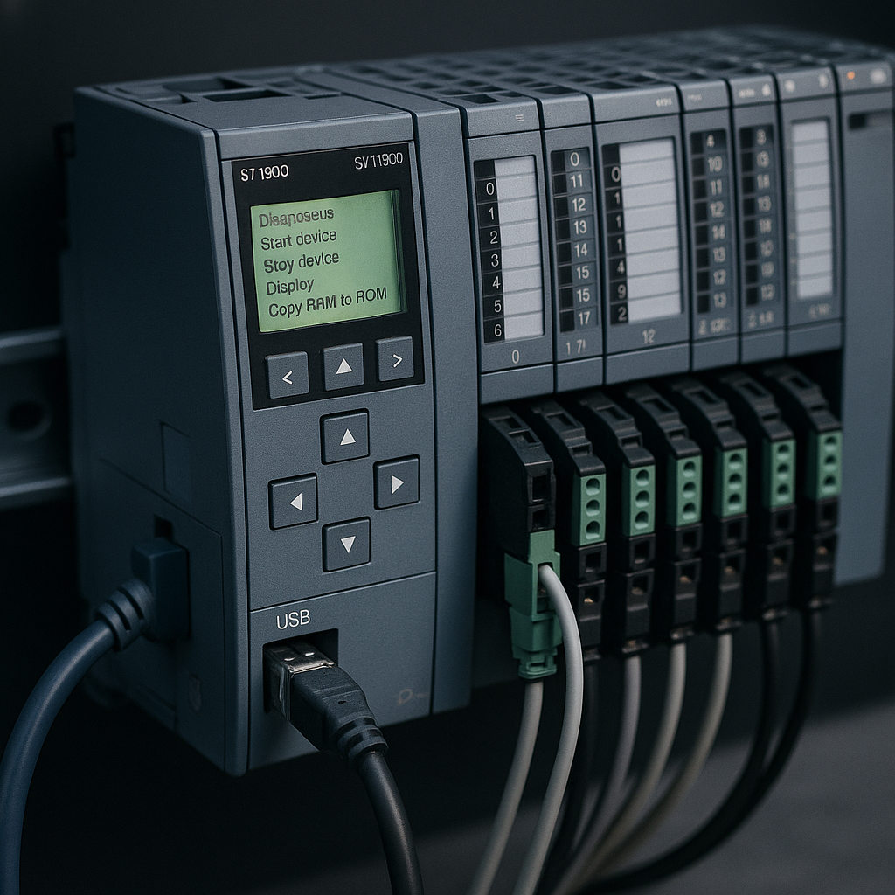
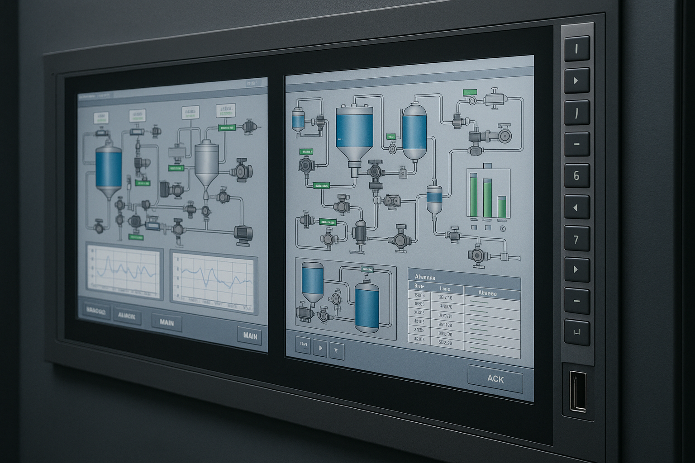
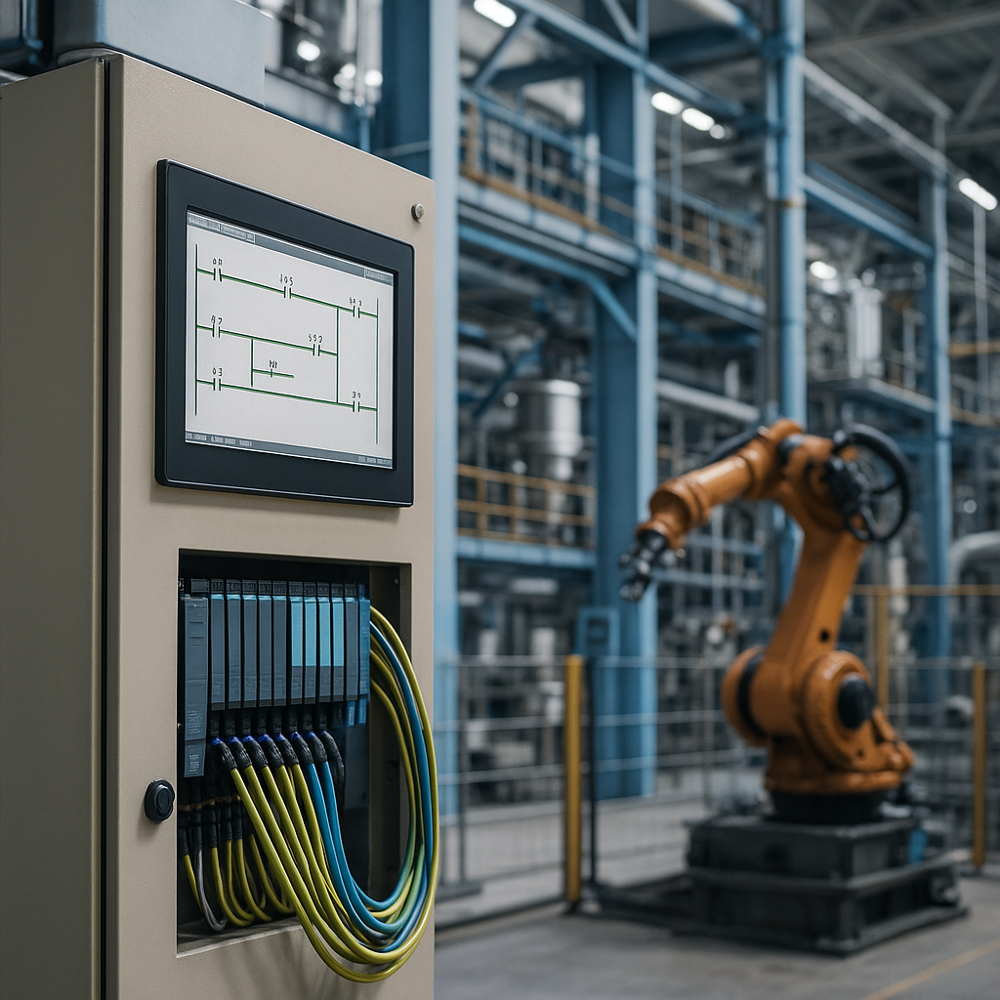
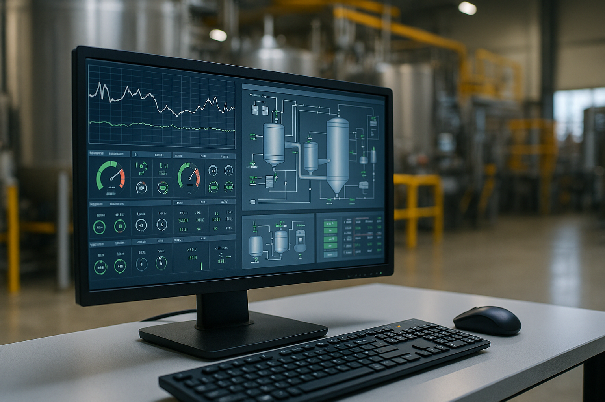
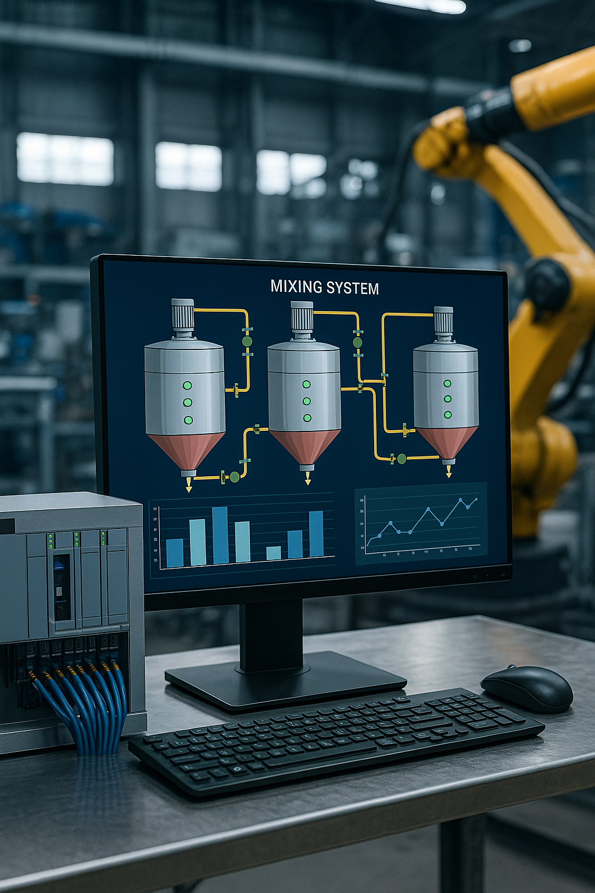
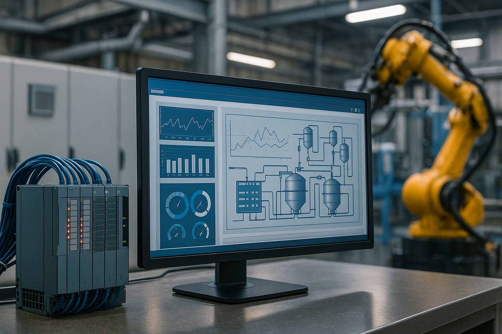

Nuestros Proyectos
Automatización Industrial | TIA Portal | SCADA

Sistema de Control PLC
TIA Portal - S7-1500

Supervisión SCADA
WinCC - HMI

Automatización Industrial
TIA Portal - Ladder

Monitoreo en Tiempo Real
SCADA - OPC-DA

Sistema de Mezclado
TIA Portal - SCL

Integración Completa
TIA Portal + SCADA

Sistema IA Predictivo
PLC + IA + Flask + Snap7